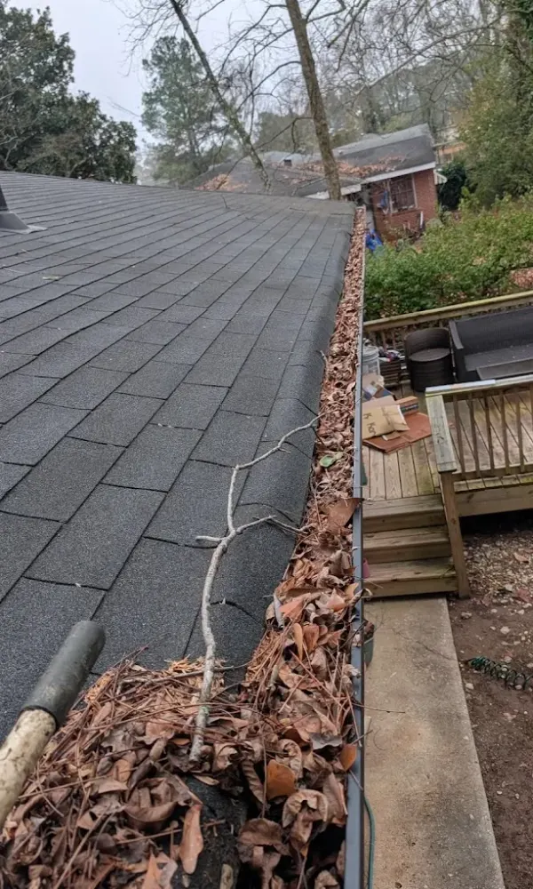

Gutter Cleaning in Oakland Heights, Cartersville GA
Oakland Heights sits on elevated terrain with a mix of newer construction and growing tree cover. The combination of steep grades and builder-grade gutters creates drainage issues that show up fast during heavy rain.
We clean and inspect gutters across Oakland Heights — by hand, every section — so your home handles Cartersville's storms without overflow.
Gutter Cleaning for Oakland Heights Homes
Oakland Heights is a growing residential area on the east side of Cartersville with a mix of homes built over the last 20 to 30 years. Many were fitted with builder-grade gutter systems — 5-inch K-style gutters with downspouts spaced wider apart than what Cartersville's rainfall really demands.
As the neighborhood has matured, tree cover has grown substantially. Young oaks and pines that were saplings when these homes were built are now producing real debris volume. That growth, combined with the area's gentle elevation changes, means gutters here face more pressure than they were originally designed for.
We clean every section by hand, flush all downspouts, and check the system for capacity issues that builder-grade setups tend to have. If something needs attention, we flag it before we leave.
- Full hand-cleaning of all gutter runs
- Downspouts flushed and flow confirmed
- Builder-grade capacity issues identified and flagged

Why Oakland Heights Homes Need Regular Gutter Cleaning
Builder-Grade Gutters Under Pressure
Many Oakland Heights homes were built with standard 5-inch gutters and fewer downspouts than the home really needs. With Cartersville receiving close to 48 inches of rain a year, these systems overflow when even a small amount of debris slows the flow. We check for capacity issues on every visit.
Growing Tree Cover
The trees planted when Oakland Heights was developed are now mature enough to produce serious leaf and needle drop. Sweetgum seed pods, pine needles, and oak leaves all accumulate faster as the canopy thickens with each passing year.
Elevation and Runoff
Oakland Heights sits on slightly elevated terrain with gentle slopes. During heavy rain, water moves fast across rooflines and hits gutters at higher volume. A partially clogged gutter on a sloped lot overflows sooner than one on flat ground — making regular cleaning even more important here.
Our Gutter Services in Oakland Heights

Gutter Guard Installation
As Oakland Heights' trees mature, gutter guards become a smarter investment each year. We install micro-mesh guards designed to handle the mix of pine needles, sweetgum pods, and oak leaves common in this neighborhood.
Learn More →
Downspout Cleaning
Builder-grade downspout placement in Oakland Heights often leaves gaps in coverage. We flush every downspout and test flow at ground level to make sure water is actually leaving the system.
How We Clean Gutters in Oakland Heights
Assess the System
We check your gutter size, downspout spacing, and overall condition before starting. This is where we spot builder-grade issues like undersized systems or brackets that have loosened over time.
Hand-Clear Every Section
We remove all debris by hand from every gutter run. In Oakland Heights, that includes packed pine needles and sweetgum pods that tend to wedge into downspout openings.
Flush & Test Flow
Every downspout gets flushed until it runs clear. We verify drainage at the ground and note any areas where flow is restricted by spacing or capacity limitations.
Gutter Cleaning in Oakland Heights — Common Questions
How often should Oakland Heights homes get gutters cleaned?
Twice a year at minimum. As the trees in Oakland Heights continue to mature, some homes may benefit from a third cleaning in late spring after pine pollen and seed pod season.
My gutters overflow even when they look clean — why?
This is common with builder-grade systems. The gutters may be too small (5-inch instead of 6-inch) or the downspouts may be spaced too far apart for the roof area they serve. We flag these capacity issues during every inspection.
Do you work on two-story homes in Oakland Heights?
Yes. Many homes in Oakland Heights are two stories. We bring the right ladder setup and safety gear for every job.
Do I need to be home during the cleaning?
No. Gutter cleaning is exterior work, so most customers don't need to be home. We complete the job and let you know once it's done.
Also Serving These Cartersville Neighborhoods
Ready for Cleaner Gutters in Oakland Heights?
Builder-grade gutters need extra attention as the tree cover grows. Call now and we'll get your Oakland Heights home on the schedule.
Call Now